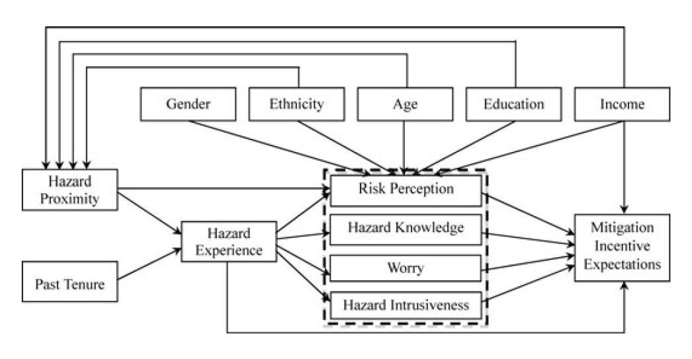
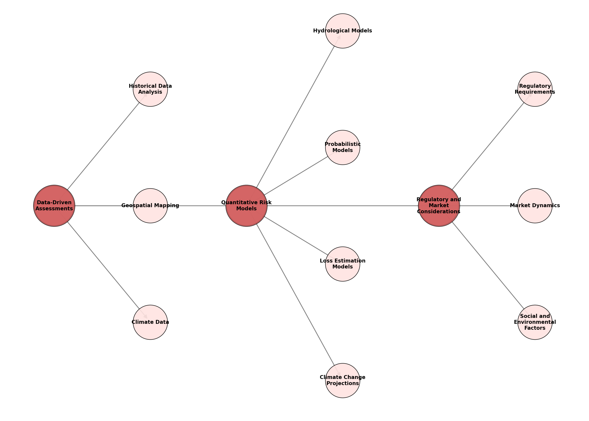
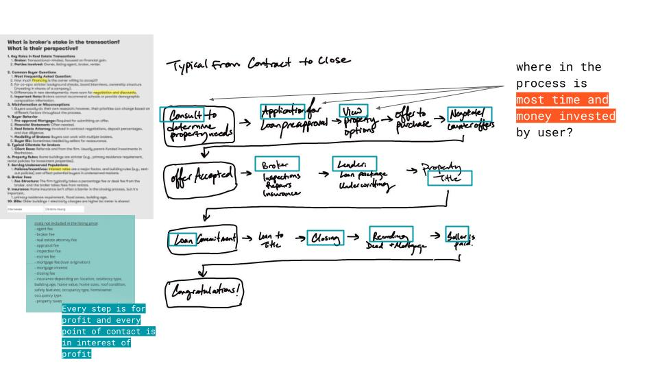

YILIN ZHENG
Politics of extreme weather events & housing justice
ISSUES OF CURRENT ONLINE REAL ESTATES INFORMATION
Users tend to focus on and give more weight to information they can easily interpret—such as the number of bedrooms—often relying on their agent's expertise and commentary to fill in the gaps in expertise.
Similarly, the way information is presented—through repetitive exposure of same listing information, inconsistent data quality, or varying standards/data metrics across platforms—shapes their decision-making.
In many regions weather-related risk information are not readily disclosed, leaving buyers unaware of potential hazards that could significantly impact long-term property value. Buyers may also underestimate or overlook rising insurance premiums as climate risk models evolve. Those in flood-prone areas are often lower-income and more susceptible to economic strain when risks materialize.
Unpriced climate risk and the potential consequences of overvaluation in US housing markets
Real estate platforms, predominantly designed by and for real estate services, connects users to an agent, ultimately steering them toward consulting services. These platforms often overwhelm users with fragmented property details while overrepresenting the immediate price tag.

LONG-TERM PROPERTY VALUE PROJECTION
Statistically, there is an increase in frequency and severity of weather events.
However, climate awareness often remains a political controversy rather than being recognized as a critical factor impacting long-term financial decisions—especially when the information provided requires expertise to contextualize and interpret effectively.
This challenge reflects a broader critique of top-down informatic urbanism, as discussed in A City Is Not a Computer. Programmable systems struggle to capture the complexity of urban life, where individual and subjective behaviors often defy rationality. Translating urban data into place-based knowledge requires nuanced analysis, yet data-driven models tend to over-reflect specific patterns while overlooking context and variability.
Climate change is changing real estates investment projections.

"In 2023, insurers lost money on homeowners coverage in 18 states, more than a third of the country...The result is that insurance companies are raising premiums by as much as 50 percent or more, cutting back on coverage or leaving entire states altogether."
- NYT: As Insurers Around the U.S. Bleed Cash From Climate Shocks, Homeowners Lose
Key audiences:
How does one understand risk?
For individuals, many buyers struggle to grasp the full scope of climate risks, often focusing on immediate factors like price or amenities. Studies highlight the disconnect between risk awareness and action. Even with incentives, households may not fully understand or prioritize mitigation measures without clear, localized, and actionable data.
Florida Households’ Expected Responses to Hurricane Hazard Mitigation Incentives
How do corporations understand risk?
Businesses' understanding of risk usually revolves around data models and financial projections. However, these models often prioritize financial returns over people-centred considerations, such as the ability of populations to recover from disasters. Existing frameworks tend to under-represent localized risks and over-emphasize generalized data, leading to systemic blind spots in addressing climate vulnerability.

How might we enable better decision/investment with democratized information?
To empower more informed decision-making and investment, it’s essential to address the disparities in access to information and resources. Information asymmetry isn’t merely about the availability of data; it’s about the ability to interpret and process that data effectively. True democratization lies in empowering users to distinguish between information designed to guide their decisions. It also requires analyzing data at multiple scales—both personal and macro—bridging individual experiences with broader systemic patterns. How can we create systems that democratize critical data, making it accessible and actionable for diverse audiences?
Where can we intervene?
Analyzing user flow for points of intervention: the initial research phase. Engaging users at this stage—before significant time and money are invested—can reduce downstream risks.
What could be incentives for the platforms to adapt?
- Positioning as a socially responsible and user-focused platform - company image.
- Building user trust through transparency and actionable insights.
- Deeper market understanding
- Consistent Capital Attraction since there is a sustaining growth for real estate SaaS platforms, even amid challenging macroeconomic conditions in the real estate sector.

De-risk decision-making
The project aim to create platforms that consolidate and contextualize risk information, translating data into actionable insights, including visualizing flood, climate projections, and integrating cost estimates for mitigation strategies to reduce information fatigue and make the presentation feel more personal.
The platform goal is low/middle-income home buyers purchase a home that will present how the risk of flooding will influence their home assets. The buyers are focused on the retention of the home value over time and how it will change.
PROTOTYPE
Computational methods
- Dataset feature selection: identified and removed features that were irrelevant or had low relevance to predicting house prices; filter to include only residential properties.
- Data cleaning: handle missing, empty, and null values; reprojecting geographics features for consistency.
- Spatial clustering: define granularity of spatial features.
- Correlation analysis: analysis correlation using the Seaborn library
- Random forest model: nonlinear prediction
- User-end visualizations: python, grasshopper, rhino 3D interactivity
DATA LOGIC & APPROACH

learn and train from existing model

Data Sources
- Building upgrades date and location: https://data.cityofnewyork.us/resource/ipu4-2q9a.json
- Year Built, Year of Alteration, Market vs Actual assessed (Land Value, Total Value): Property Valuation and Assessment Data Tax Classes 1,2,3,4 https://data.cityofnewyork.us/api/views/8y4t-faws/files/2e925830-8a86-453a-9072-1e6045ed92a4?download=true&filename=Property_Assessment_Data_Dictionary.xlsx
- FEMA flood insurance: https://www.fema.gov/about/openfema/data-sets , https://www.fema.gov/openfema-data-page/fima-nfip-redacted-policies-v2
- Historic Land Use Data: https://data.cityofnewyork.us/Environment/Historic-Land-Use-Data/r9ca-6t4q/about_data , https://libguides.nypl.org/househistory/ownership
- RedFin Data Center: https://www.redfin.com/news/data-center/